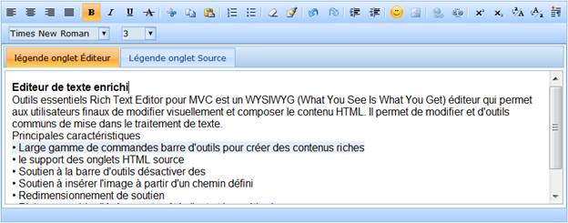
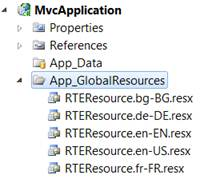
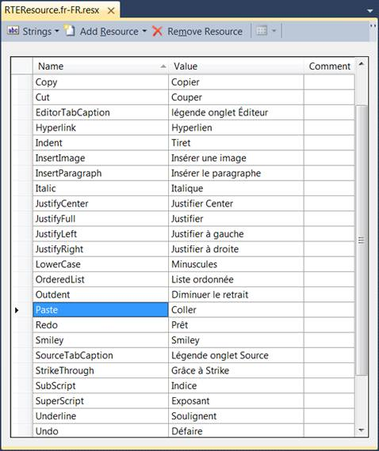

Localization is the process of providing controls in different cultures to help users to easily set their own culture.
RichTextEditor provides localization support so that users can customize their User Interface (UI). Resource files contain the settings for different cultures, which are important for localizing an application.
Use Case Scenarios
Localization is the key feature that provides solutions to global customers.

Figure 209: RichTextEditor in French Culture
Adding Localization to an Application
Localization in RichTextEditor can be customized by using two ways, namely:
· RichTextEditorBuilder
· RichTextEditorModel
Adding Resource Files
To localize the RichTextEditor control, you need to create a resource file for each culture. The following steps should be performed when localizing strings for your culture:
1. Add the resource (.resx) files in the App_GlobalResources folder for different cultures.
2. Name the resource files in the RTEResource.[culture].resx format.
Examples
· RTEResource.de-DE.resx - A resource file for the German culture.
· RTEResource.fr-FR.resx - A resource file for the French culture.

Figure 210: App_GlobalResources Folder
The following screen shot shows a resource file in the French culture:

Figure 211: Resource File in French Culture
Using RichTextEditorBuilder
To customize Localization in RichTextEditor by using RichTextEditorBuilder:
1. Create a View.
2. In the View, invoke the RichTextEditor helper with the control ID.
3. Set the Localize method, to add the name of the culture.
|
View[ASPX]
<%=Html.Syncfusion().RichTextEditor("myRichTextEditor") .Localize(“fr-FR”) %> |
|
View[cshtml]
@{ Html.Syncfusion().RichTextEditor("myRichTextEditor") .Localize(“fr-FR”).Render(); } |
4. By default, the current culture is set to “en-US”. You can check the current culture from “System.Threading.Thread.CurrentThread.CurrentUICulture”. The current culture can be changed by using the CurrentUICulture property, as shown in the following code snippet.
|
[Controller] public ActionResult Index() { System.Threading.Thread.CurrentThread.CurrentUICulture = new System.Globalization.CultureInfo("fr-FR"); return View(); |
5. By default, the resource file for a specific culture is obtained from the App_GlobalResources directory. However, the location of the resource file can be changed by using the LocalizationPath property, as shown in the following code snippet.
|
View[ASPX]
<%=Html.Syncfusion().RichTextEditor("myRichTextEditor") .Localize(“fr-FR”) .LocalizationPath(“~/Resources”) %> |
|
View[cshtml] @{ Html.Syncfusion().RichTextEditor("myRichTextEditor") .Localize(“fr-FR”) .LocalizationPath(“~/Resources”).Render(); } |
6. Build and run the application.
Figure 212: RichTextEditor in French Culture
Using RichTextEditorModel
To customize Localization in RichTextEditor by using RichTextEditorModel:
1. In the Controller, create an object for the RichTextEditorModel class.
2. Set the Localize property, to add the name of the culture.
|
[Controller] public ActionResult Index() { RichTextEditorModel rteModel = new RichTextEditorModel() { Localize = "fr-FR” }; ViewData["myRTEModel"] = rteModel; return View(); }
|
3. By default, the resource file for a specific culture is obtained from the App_GlobalResources directory. However, the location of the resource file can be changed by using the LocalizationPath property, as shown in the following code snippet.
|
[Controller] public ActionResult Index() { RichTextEditorModel rteModel = new RichTextEditorModel() { Localize = "fr-FR", LocalizationPath = "~/Resources", }; ViewData["myRTEModel"] = rteModel; return View(); } |
4. By default, the current culture is set to “en-US”. You can check the current culture from “System.Threading.Thread.CurrentThread.CurrentUICulture”. The current culture can be changed by using the CurrentUICulture property, as shown in the following code snippet.
|
[Controller] public ActionResult Index() { System.Threading.Thread.CurrentThread.CurrentUICulture = new System.Globalization.CultureInfo("fr-FR"); return View(); } |
5. Create a View.
6. In the View, invoke the RichTextEditor helper with the control ID.
7. From the ViewData, assign the RichTextEditorModel class to the RichTextEditor helper.
|
View[ASPX]
<%=Html.Syncfusion().RichTextEditor("myRichTextEditor", (RichTextEditorModel)ViewData["myRTEModel"]) %> |
|
View[cshtml]
@{ Html.Syncfusion().RichTextEditor("myRichTextEditor", (RichTextEditorModel)ViewData["myRTEModel"]).Render();} |
8. Build and run the application.
Figure 213: RichTextEditor in French Culture
Properties
The properties of the Localization feature in RichTextEditor are described in the following tabulation:
|
Name |
Description |
Type |
Data Type |
Reference links |
|
Localize |
Gets or sets the culture for RichTextEditor. |
Server-side |
string |
Not applicable |
|
LocalizationPath |
Gets or sets the location of the resource file. |
Server-side |
string |
Not applicable |
Sample Link
To view a sample:
1. Open the Tools Sample Browser from the dashboard. (Refer to the Samples and Location chapter.)
2. Navigate to Tools.Mvc -> RichTextEditor -> Localization Demo.